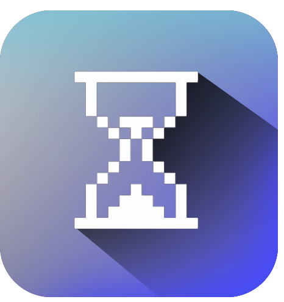

No historical reads in the runtime
A program only sees the accounts handed to it for the current transaction. There is no syscall for “what was the state of account X at slot S.” Even current-state reads are limited to explicitly passed accounts.

A verifiable historical-state coprocessor for Solana. Programs read the chain's past — balances, ownership, prices and eligibility at any prior slot — and trust the answer through a single on-chain proof verification.
Sand marks the passing of slots. Each slot commits a Merkle root of Solana's account state — the basis for every historical proof.
Solana programs are blind to their own history. The runtime exposes only the current state of accounts passed into an instruction — the gap Yore fills comes from a few structural facts, plus a category EVM already has.
A program only sees the accounts handed to it for the current transaction. There is no syscall for “what was the state of account X at slot S.” Even current-state reads are limited to explicitly passed accounts.
Validators do not retain full historical account state; ledger history is pruned aggressively. Access to the past depends on centralized archives and warehouses — none of them verifiable on-chain.
Protocols that need historical facts run an off-chain script and have a privileged signer push the result. The user must trust the script and the signer — breaking the trust model that makes the rest of the app trustless.
The EVM ecosystem already treats historical-state access as a first-class infrastructure category. Solana, despite a huge DeFi and airdrop economy that constantly reasons about the past, has no native equivalent — that is the opening.
Yore moves a historical computation off-chain to a competitive prover network and brings back a result plus a proof, so the requesting program inherits the same security as running the computation on-chain — at a fraction of the cost.
A program submits a query: a type, parameters, the target slot or slot range, plus a payment and deadline.
A prover claims it, reads the relevant historical state against the committed root, and executes the query.
The prover produces a ZK proof of correct execution — or an optimistic result backed by a bond.
The verifier checks the proof in one call and writes the result on-chain. The prover is paid; bad proofs are slashed.
Pick a query, point it at a slot, and run the prover loop — request, compute, prove, verify, settle. The result comes back with a succinct proof the on-chain verifier checks in a single call.
Sample query · Solana devnet
$ yore await request …
// submit a query to run the proving loop
The network separates four functions — distinct for incentive and slashing purposes — and routes each query to the settlement path that fits it.
Programs & dApps that need a historical fact on-chain. Submit queries and pay per fulfilled request.
Executes the query over historical state and generates the proof. Competes for requests in a reverse-Dutch auction.
Maintains and serves the committed historical state (erasure-coded), guaranteeing data availability for provers.
Secures the commitment roots and the network; runs the on-chain verifier program and challenge logic.
Prover proves correct execution against the committed root inside a zkVM; the verifier checks a succinct proof on-chain.
Prover posts result + bond; a challenge window lets anyone force re-execution of a sample and slash a fraudulent prover.
Optimistic by default; auto-escalates to a ZK proof when the requestor flags instant finality or a value threshold is crossed.
Producing a result needs indexing and compute; verifying it is one proof check (ZK) or one sampled re-execution (optimistic). Paid work is always work the network can independently check.
Everything rests on a verifiable commitment to Solana's past state, and a settlement layer that only ever pays for work the network can independently check.
Yore commits to a Merkle (or Verkle) root over the set of account states per slot or epoch. These rolling roots are anchored in the on-chain commitment registry, so any historical fact can be proven by a Merkle path against the root for its slot.
Honest by design: at genesis, correctness of the commitment depends on the source archive. It hardens progressively as the network decentralizes.
Requests clear through a reverse-Dutch auction: the price a requestor will pay rises over time until a prover accepts — pricing each query by real difficulty and current capacity.
This mirrors verifiable-work consensus: emissions follow cryptographically measured useful work — not arbitrary effort.
Whole classes of logic become trustless once historical reads are verifiable — and the first milestone proves the full loop with a single query type.
Prove a wallet held ≥ N of a mint at slot S — trustlessly, without an off-chain script and a privileged pusher.
Time-weighted average prices over a slot range, retroactive liquidation & solvency checks, and oracle backstops from history.
Voting power or rewards based on how long and how much a wallet held — proven, not asserted.
Underwriting that references a wallet's historical balances and behavior — with a verifiable proof.
Reward past on-chain actions or holdings as verifiable facts inside a contract.
An open query-type registry and a coprocessor SDK let integrators define and verify new reads over Solana's past — beyond the built-ins.
The first milestone is a single query type — balance-of-account-at-slot — end to end on devnet, proving the full loop while keeping surface area minimal.
A request queue, a commitment registry (a few seeded historical roots), and a verifier using Solana's alt_bn128 / Groth16 syscalls for the ZK path.
Pulls historical account state from an existing archive, builds the Merkle path against the seeded root, and generates a ZK proof of the read in a zkVM.
Requests “balance of wallet W at slot S,” a prover fulfills it, the verifier checks the proof, and the contract consumes the verified result and acts on it.
Add TWAP-over-range and holding-at-snapshot, ship the optimistic path, decentralize archivists with retrievability proofs, and open the prover auction permissionlessly.
A Solana-native wedge against a proven EVM category — with the hard parts named, not hidden.
Historical-state & ZK coprocessors are an established category on EVM — and the model is proven by general prover markets and EVM coprocessors. None serve SVM in a first-class way. Yore's wedge is being the Solana-native equivalent — designed around the SVM account model, slot-based time, and Solana's specific archival reality.
The incumbents to displace aren't other coprocessors — they're the status quo on Solana: trusted off-chain scripts + multisig pushers, and centralized RPC / archive providers. Yore competes by making the same answers verifiable & permissionless.
ZK proofs over rich queries are expensive. The hybrid model and aggressive scoping of query types are the mitigation — not a claim that ZK is free.
The cheap path carries a challenge window and a liveness assumption on honest watchers.
How many programs need historical reads strongly enough to pay for verifiability rather than trust a multisig? Early design targets the highest-value, most fraud-sensitive reads.
Genesis correctness leans on existing centralized archives — decentralizing archival is explicit later work, not day one. And a proof attests correct computation against the committed root, not that the root reflects reality, so commitment integrity is a first-order property.
A permissionless market for verifiable historical reads — built around the SVM account model and Solana's slot-based time.